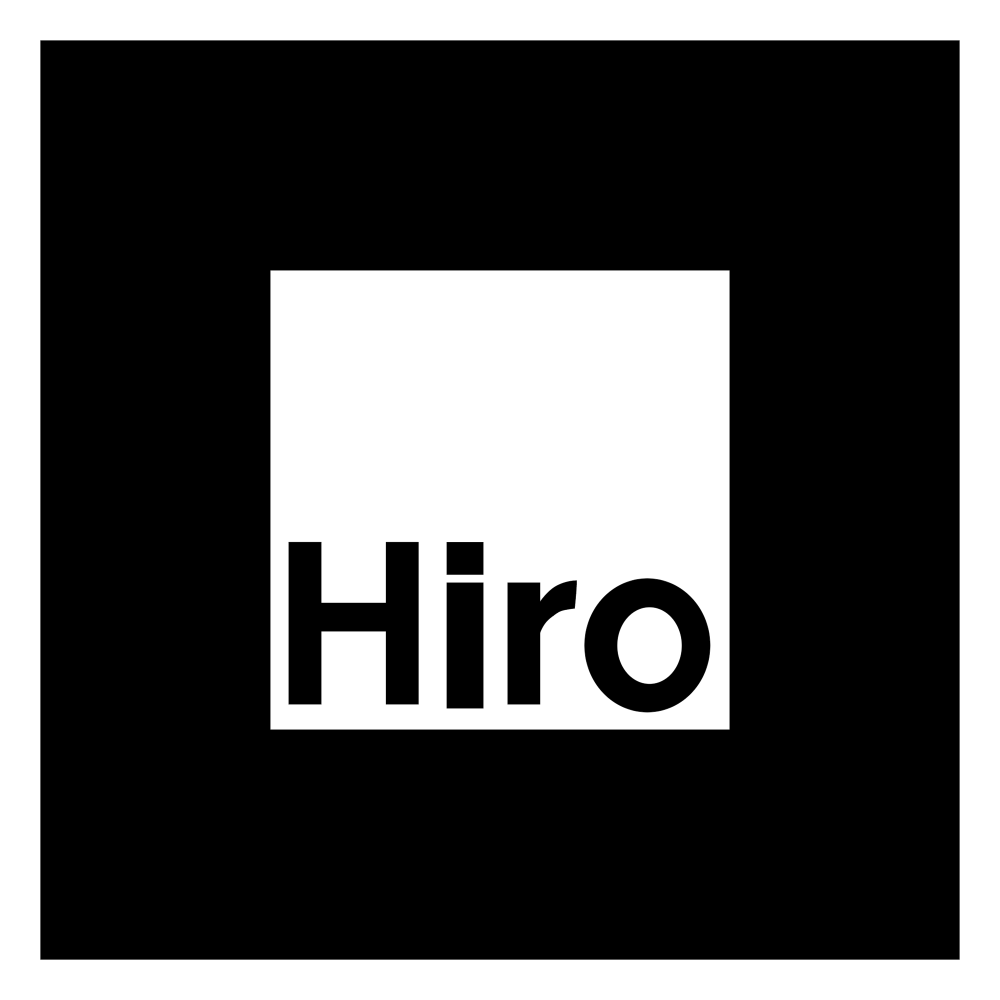

紙の上に、立方体を。
QRでこのページを開き、ARを開始。同じ紙の黒い「Hiro」マーカーにカメラを向けてください。
1. ARを見る
明るい場所で、マーカーの四隅がすべて映るようにしてください。映像はこのブラウザ内で処理します。
2. 印刷する紙を準備
公開後はこのページのURLが自動で入ります。QRとHiroは隣に並べ、黒枠には重ねません。
QR → ページを開く → ARを開始 → Hiroを見る

公開URLを指定してQRを作成してください。
ARは左のHiroの上に表示されます。黒枠と周囲の白い余白を切り取らないでください。